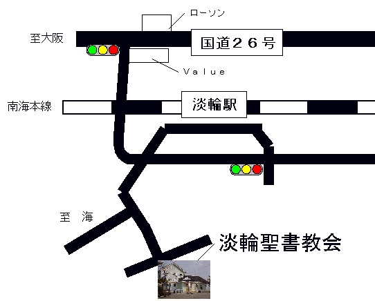

���� �@�W��������
�q�t �����j�t
���ݒn ���{���S�����W�ւW�R�W�|�P
�s�d�k �O�V�Q�S�|�X�S�|�R�Q�R�T
��� ��C�{���W�։w�k���V��
�W�։w�ւ͓�C�{����g�w����͘a�̎R�s�s���}�s�ɏ��
����w�ŏ�芷���A���肩��e�w��ԂłR�w�ڂł��B
�E�t�ߒn�}

���̑��ɍ��s���ɍ��o�C�u���Z���^�[�Ƃ���
�ʂɌ���������܂��B������ł͋F����ƁA����
�w�Z��ʂɎ����Ă��܂��B
[BACK]